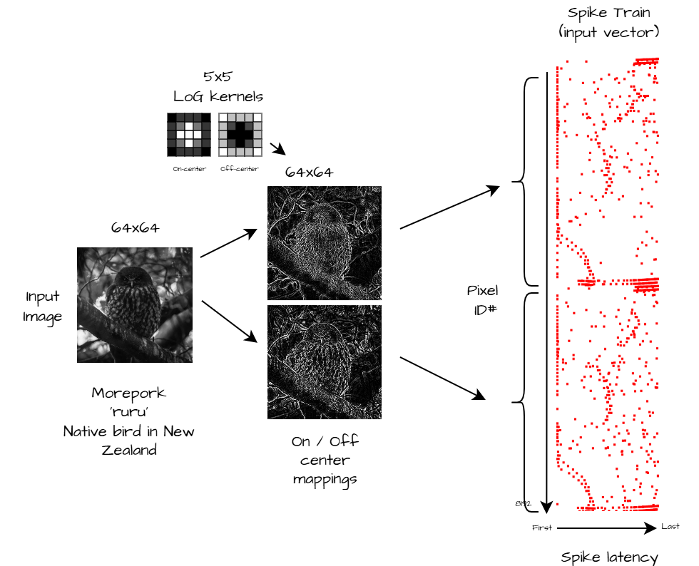
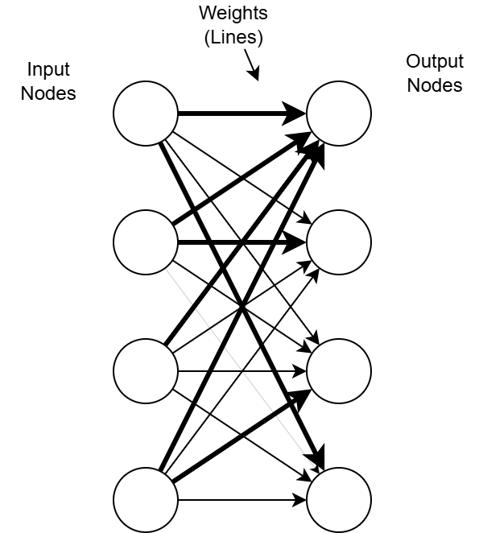
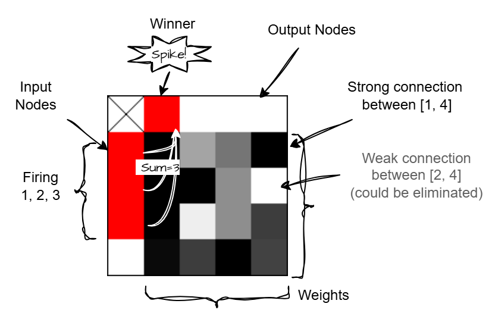
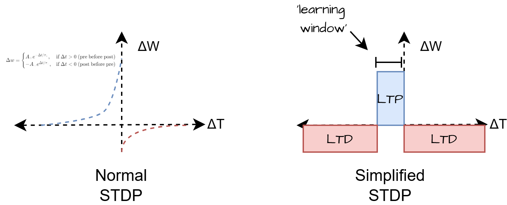

This is my amateur dive into Spiking Neural Networks.
First up let me preface this by saying I am not a machine learning (ML) expert, nor software engineer. I am a mechanical engineer with an interest in ML who dabbles in code. My ideas are half baked and perhaps somewhat misguided, my code is scrappy, but it does mildly interesting things. Please feel free to email me at blog@spec.nz if you'd like to reach out.
I love learning and experimenting with alternative AI architectures such as SNN's (Spiking neural networks). The world is obsessed with transformer models. There doesn't seem to be anywhere near as much interest or material out there on spike based networks. In terms of performance, today, SNN's are well behind other models. Though I don't think we should give up on them just yet.
SNN's are fascinating to me because of their parallels with the brain and the simplicity of the Hebbian learning and spike timing dependent plasticity (STDP) learning rules. My gut feeling tells me the so called 'path to more general intelligence' could involve some combination of state space models, recurrent neural networks and... spikes.
I figured experimenting with SNN's is a good way to gauge their potential. Others have built tools, but I've always wanted to build my own toy model from scratch. Something interactive that allows me to see what is happening under the hood, and to share it with others.
This is what I've created after a few months of tinkering here and there. Is it revolutionary? No. Am I reinventing the wheel? Probably, who cares... Enjoy.
This is heavily inspired by the work of Prof Simon Thorpe for which I sincerely thank for his contributions to this field. He has several excellent lectures available on YouTube and research papers accessible for free.
What can a SNN do?
In theory, SNN's can learn patterns. In particular, spatiotemporal patterns which is great for speech/audio and vision systems. What's more, they encode information in spikes (event based) rather than traditional neural networks that process data at fixed intervals. This has some unique advantages which I'll get to later.
How do I plan to build a SNN?
As a layman entering the ML game late, and trying to make sense of all this AI research; one approach to SNN's I see is to simulate every millisecond of neuronal activity. Using exponential equations to calculate action potentials complex dynamics between all neurons at once. This doesn't interest me much as it is computationally very heavy, you have to perform a lot of calculations to get any signal. Then there is a field called neuromorphic computing which takes inspiration from our own brains, using artificial neurons and synapses on a chip to process temporal information very efficiently. Within this there is an idea to only perform calculations on neurons that are actually firing (event based) so we don't waste computing clock cycles on idle neurons. This I think has the potential to speed things up by an order of magnitude or more. To take advantage of this the network has to be somewhat sparse.
So I've tried to implement a mish mash of the ideas above here. My thinking is if I can lower the computational requirements enough, then perhaps I can get something interesting happening in JavaScript!?
Simplified LIF SNN Model
LIF = Leaky integrate and fire. An action potential regime for a simple neuron that integrates (accumulates) input signals, fires/spikes when above a threshold, and leaks over time to a resting value.

Network Input Data Overview
We start with an input image. Convert it to grayscale and down sample to 64 x 64px. Then we use a pair of 5x5 Mexican hat convolutional filters to produce on-center and off-center contrast maps. We do this because you often don't need entire 8-bit grayscale values for every pixel in an image to tell what the image is, just the edges can be enough, and this takes a lot less processing when you reduce it to this level. In this case the filters emphasize regions with high luminosity gradients (aka edges) while suppressing uniform regions. Though, if you wanted to perform other types of processing you easily could, e.g. raw pixel values, only the brightest spots, orientation maps, the differences between camera frames, or all of these at once. In fact you could use any combination of data making this "multi-modal", but you'd still want to select appropriate preprocessing/filters for the data type (e.g. spectrogram for sound, letters or tokens for text).
With the resultant maps, we take every pixel ID and put it into one of 256 bins based on intensity. These bins become the input "spike train". The bins are fed into the network in descending order such that the high intensity pixels have the lowest latency (fire first). These high intensity/low latency bins contain the most salient information about the image, and thus the first output neuron to fire as a result of the input spike train will likely also be the most important. Actually, for most images you can discard a lot of the lower bins (i.e. pixels with low contrast) and still make sense of the image. See sample below. That is unless you are trying to detect a dimly lit object in the shadows of an otherwise very bright image.
Contrast map of size 281x281 (78,961 total pixels)Same image but we apply a threshold so only the first bin is shown. In this case we have reduced it to only 4,559 px (spikes) (only 6% of the original)Animation where we alter the number of spikes (bins) included in the spike train. Notice how the image is still recognizable even using just the using minimum number of spikes.
You may be used to seeing neural networks drawn with circles and lines like below. This makes it easy to see the network structure but not so easy to see the individual weights.

Single layer neural network drawn the traditional way
For a fully connected single layer network it can be drawn in a grid like fashion as below. This allows you to see the individual weights easier. Note: as a simplification this layer only shows 4 input nodes and 4 outputs. To process an image we need an input size of 8192 (2x 64x64 maps) and the number of outputs can be as few or as many as we want. The idea is that each output node will become receptive to a single pattern/feature. The more outputs available the more capacity the network has to 'learn'.

Equivalent diagram drawn as a gate array
Inside the network, we fully connect each input neuron (left most column on diagram above) to every output neuron (top row) with a weight (shown on the main grid). The weights are initialised randomly to low values. The shade of each cell in the grid indicates the strength of the connection ranging from 0-1.
When an input neuron spikes, it only stimulates its connected neurons according to the connection weights. The spikes accumulate in the output nodes and if any node is pushed above its threshold it fires. Additionally, after each time step all nodes will slowly decay (leak) to their resting value. That is the essence of a spiking neural network!
Learning Rules
The network described above won't do much on its own. We need some additional mechanisms to get it to learn patterns. Ideally we can get it to:
To automatically learn repeating patterns of any length (motifs)
Promote connection sparsity. This is the key to reducing the memory and compute requirements
Prevent multiple nodes learning the same thing
STDP (simplified)

In terms of computing, this simplified learning rule is fast to calculate because it only requires addition and subtraction operations.
The core learning method here is STDP. Usually STDP is performed using an exponential function to precisely calculate the weight change based on relative timing between spikes. Here we reduce this function to something more binary. In this version, after firing, there is a fixed weight increase (LTP - long term potentiation) if the pre-node fired within a fixed 'learning window', and then everything else is decreased (LTD - long term depression). This causes the network to learn groups of neurons that fire together.
One limitation of this simplified rule is that we don't have the ability to determine the input spike order. This is because we apply the same weight change to all neurons that are either "in the window", or not. Though determining spike order might still be possible if we add recurrent connections to allow temporal dependencies to be encoded over time. This is something I'll have to experiment with in future.
By depressing such a large number of connections we create network sparsity. Many of the weights tend towards zero (or near zero) meaning we could eliminate them from the calculations which further increases performance.
Winner Takes All & Lateral Inhibition
To prevent multiple nodes learning the same thing we use a winner takes all approach. This means only one node on the output layer is allowed to fire at each time step.
i.e. only one has the opportunity to do STDP. Immediately after firing, the potential of all other nodes on the layer is reset (lateral inhibition). The node that fired is not able to fire again until a set number of cycles (refractory period) have passed. This aids in learning distinct patterns by promoting specialisation among output neurons and creating sparse representations of the input data.
Spike Threshold Adaption
Using just the above rules the network will learn groups of spikes that fire together, however its learning capacity will be highly dependent on the input we give it and the parameters we choose. e.g. If we set the firing threshold too low then a node will fire on just a few pixels (very low level features), and because in an image there is usually huge number of these low level patterns, the neurons will constantly be pulled away from what had previously caused them to fire. Conversely, a threshold that is too high will almost never fire except under very specific (hence unlikely to repeat) input.
A simple method of letting neurons decide their own threshold is: For each neuron there are two different thresholds. One for firing, and one for learning. The learning threshold should be some factor (say 30%) higher than the firing threshold. To begin with all neurons start with a very low thresholds meaning they fire easily. From here: If a neuron reaches its firing threshold, it spikes, triggering STDP in connected nodes. If it also reaches the learning threshold, its firing threshold increases making it more selective.
At first, neurons fire intensely due to high connectivity and low thresholds. But as STDP refines their response to patterns, and thresholds rise, they become more selective—though not overly restrictive, ensuring they still recognize patterns despite small variations in image tilt, position, or lighting.
Pre-Synaptic Reset
This is a term I pulled out of thin air. Another way to prevent all nodes learning the same pattern is exclude input nodes after they participate in STDP.
For STDP to work, we track when each node fires to determine if it falls within the learning window. When a output node fires, all input nodes that fired within this learning window have their lastFired attribute updated, preventing them from contributing to future learning windows until they fire again. This loosely acts as an energy-based rule, limiting how much "energy" inputs can transfer to downstream nodes.
Choosing the webcam as the network input is the best way to see the networks learning behaviour. Watch the network 'learn' your shape'. Then move suddenly and see how a new node will learn your new position.
Discussion
Playing with this you will notice that over time, the output nodes become receptive to repeating patterns (motifs / images). One node per pattern.
With each spike the nodes adjust their weights slightly to learn the pattern that caused them to spike.
If you feed in random noise and then inject a repeating motif once in a while, with sufficient neurons, one of the neurons will pick up on this motif and you will see its threshold climb.
You might notice that many of the weights tend to settle at either 0 or 1. We can eliminate the connections that are close to zero which significantly improves performance. And we can round up the ones close to 1 which effectively quanintizes the weights to be unitary (they either exist or they don't) which reduces the memory requirements of the application (that is if it weren't written in JavaScript).
Eventually the network runs out of available of output nodes that are able to learn new patterns. But because the network is theoretically cheap to run due to its sparsity and unitary weights, we can just add a heap more nodes.
Next Steps
Some further idea's I'd like to test are:
Implement a similar network with audio or text
Add more layers, recurrent connections, or go structureless (deep random neural network)
Implement a kind of reinforcement learning step to solve a simple task (e.g. inverted pendulum or play pong)